A launcher for Android E Ink readers
The book you’re reading,
on your home screen.
Just three things: the book you’re reading, the apps you use most, and today’s reading time. Everything else is plain text, one page at a time.
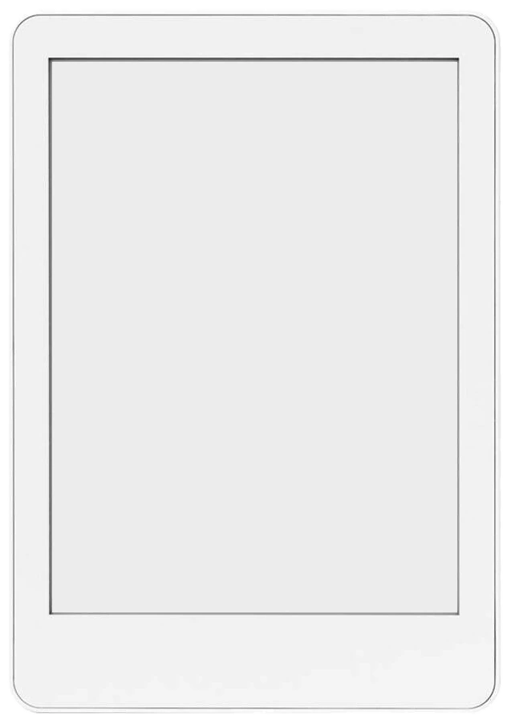
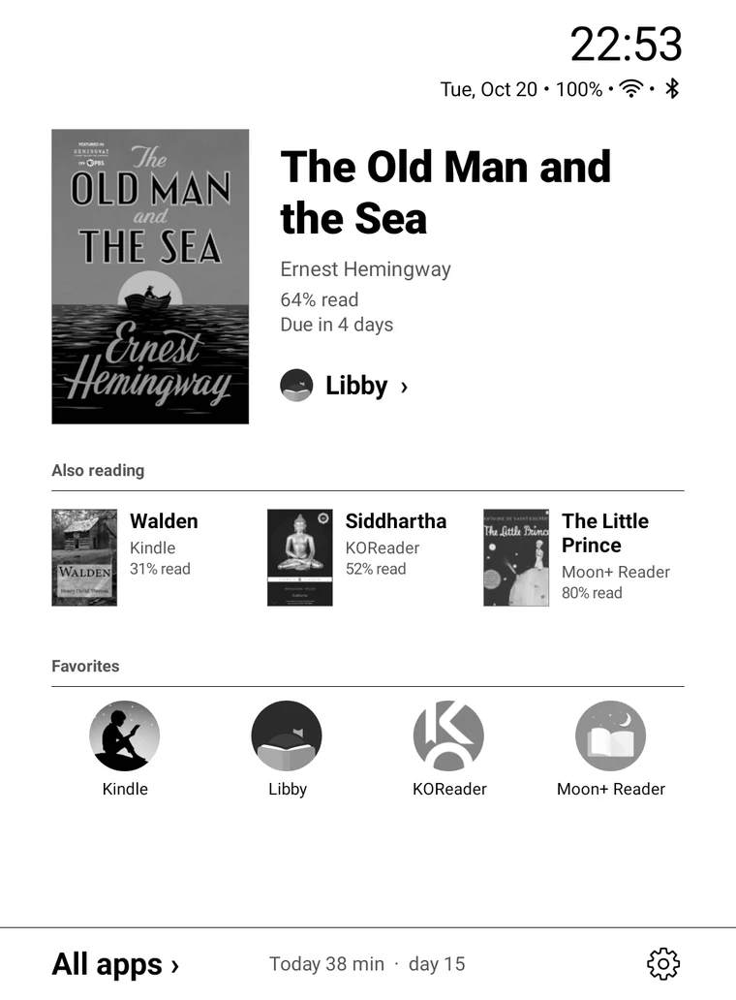
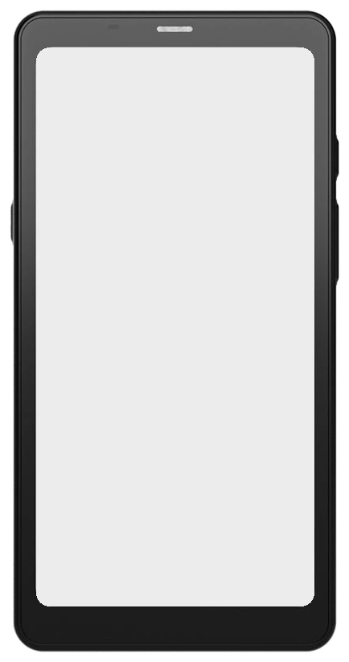
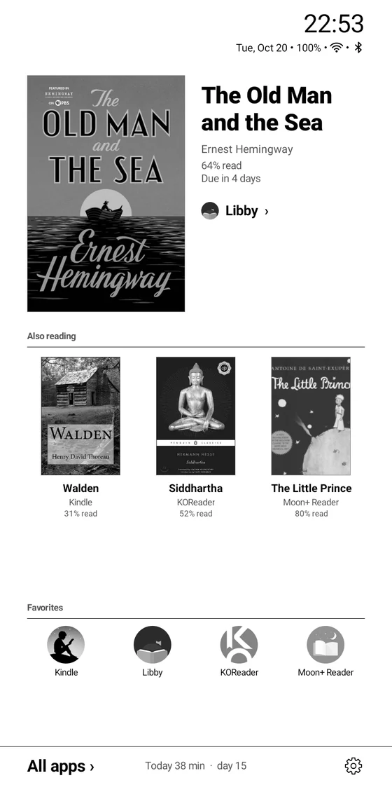
Your books were scattered across apps.
Now they’re all on your home screen.
What you’re reading, how far you’ve got, when the loan is due: you had to open each reading app to find out, and every app kept its own reading stats. Pebble Desk puts the books from all your reading apps on one home screen, and keeps one reading log across all of them.
Just open a book.
Open a book in your reading app and Pebble Desk picks up the cover, title, progress and even the loan due date, then puts it first on your home screen. Nothing to add by hand.
- Open a book in your reading appTap it on your shelf, or pick up where you left off.
- Go home. It’s first in line.The cover comes from your shelf, and progress updates as you read.
- Tap to jump back inEach book remembers its app and opens it directly.
Works with
- Kindle
- Libby
- KOReader
- Readest
- BookFusion
- Moon+ Reader
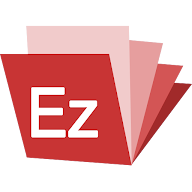
EzViewer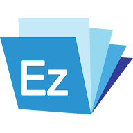
CherieViewer- Woojoo
- Kyobo Library
- Kyobo eBook
- millie
- Aladin
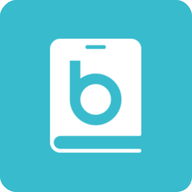
Bookers- RIDI
- YES24 Library
- my YES
- YES24 eBook
Reading time,
kept for every book.
Only time on the reading screen counts. Hit your daily goal and the ring closes. Read five minutes or more, day after day, and your streak grows.
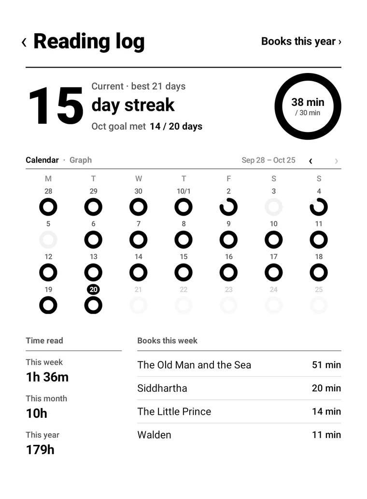
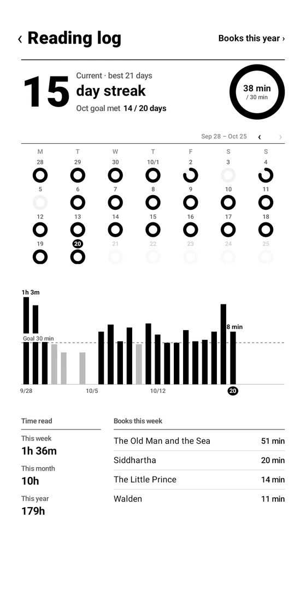
Finish a book.
Rate it, say a few words.
Give it stars, in halves, and write a line or two when you finish. Read it again and each round keeps its own.
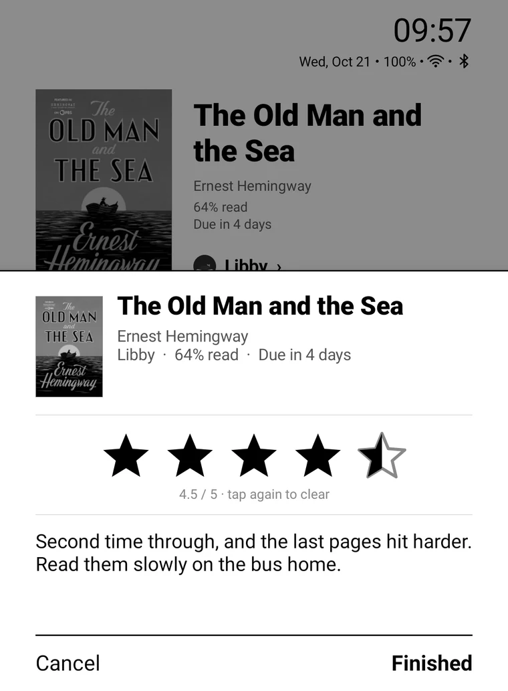
Finished books
fill a year’s shelf.
Finished books get a Finished band on the cover and gather here with their ratings. Past years have their own shelves.
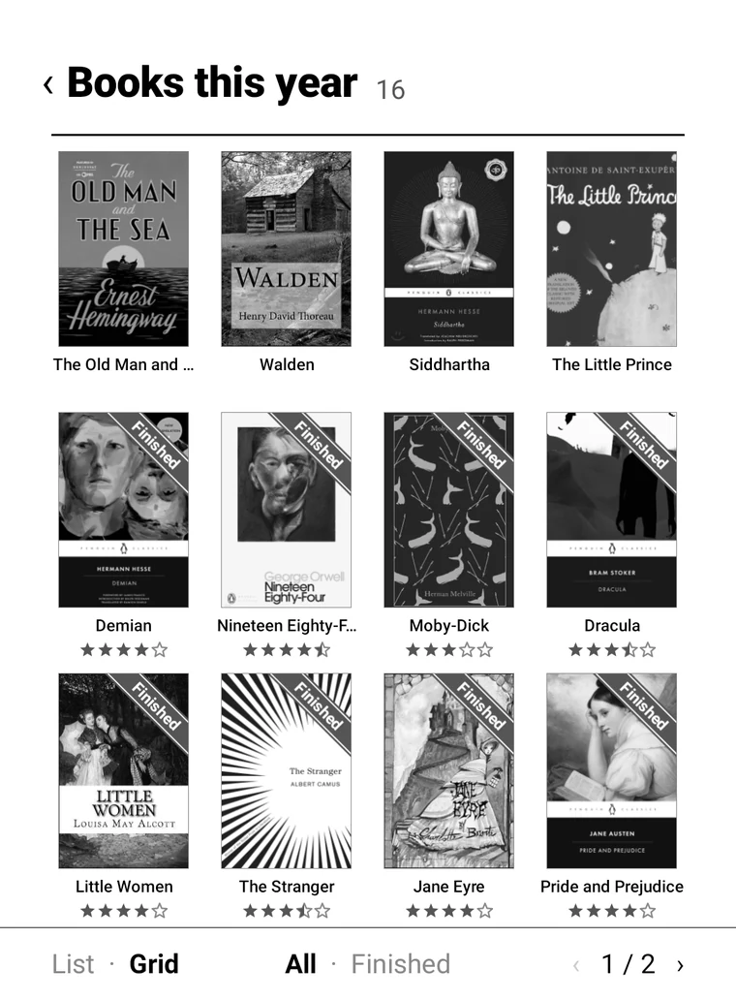
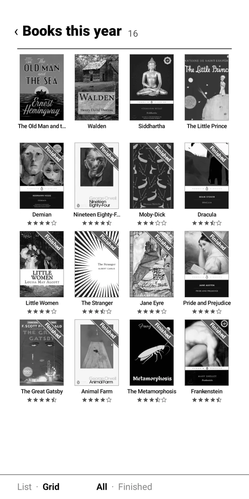
Made for E Ink.
It moves less.
- No animationsNothing slides or fades, so the screen flashes less.
- Pages, not scrollingLists turn one page at a time. Swipe, or tap ‹ 1 / 2 ›.
- Only what changedWhen the clock ticks, only the clock is redrawn. It’s ready right after boot.
Questions
- Which devices does it work on?
- Android E Ink readers running Android 9 or later.
- Is it free?
- Yes, and there are no ads. You can use it freely for noncommercial purposes (PolyForm Noncommercial 1.0.0).
- How do I install it?
- Download the APK from GitHub Releases, copy it to your device and tap it in a file manager. Allow “install unknown apps” the first time. Then set Pebble Desk as your home app in its Settings › Apps › Default home app. Later versions install from Settings › About › Update.
- Why does it need the accessibility permission?
- To recognize the book you open in a reading app. It only receives the screens of supported reading apps and doesn’t look at any other app. Reading time comes from Android’s Usage access.
- Where is my reading history stored?
- Only on your device; nothing is sent anywhere. The internet is used only to search covers (YES24) and to check for new versions (GitHub). Uninstalling the app deletes the history too.